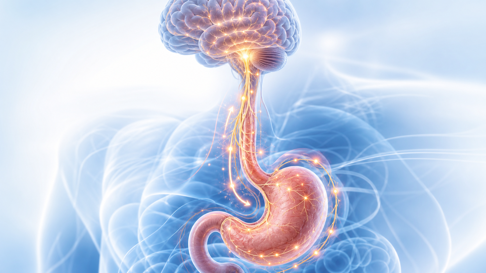
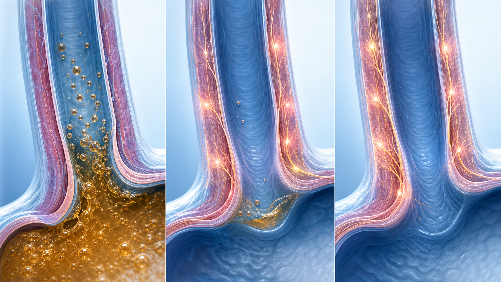
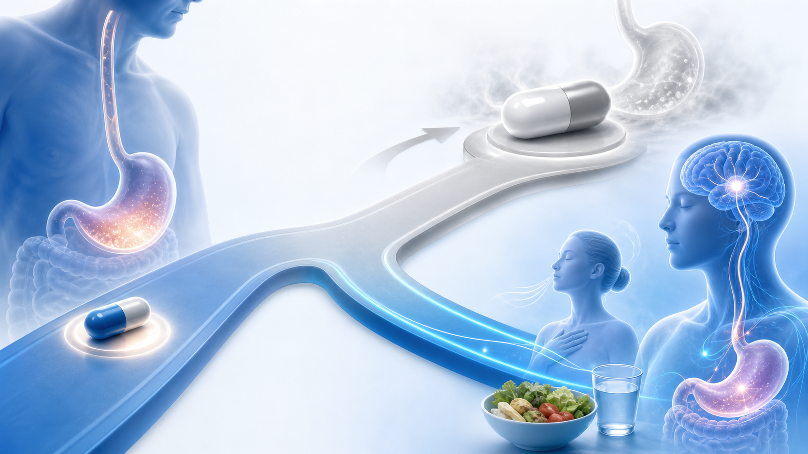

내시경이 정상인데
왜 계속 쓰릴까요?
기능성·과민성 소화불량의 이해와 관리 — 약을 끊으면 재발하는 쓰림, 그 이유와 단계적 해법을 함께 봅니다
내시경이 깨끗한데 증상이 있는 이유
뇌–장 상호작용 장애(DGBI) — 눈에 보이는 상처가 아니라, 신경이 예민해진 상태입니다
식도·위 신경이 통증으로 느낍니다
조금만 먹어도 더부룩·금세 부릅니다
변화가 신경을 더 예민하게 만듭니다

흔한 오해 3가지 — 바로잡기
이 오해들 때문에 치료가 잘못된 방향으로 흐르기 쉽습니다
“위산만 줄이면 낫는다”
산은 원인의 일부일 뿐입니다. 그래서 산약이 ‘조금’만 듣고, 끊으면 재발합니다.
→ 산을 넘어 신경 과민을 함께 다스려야 합니다.
“자다 깨는 건 저혈당 때문”
야간 저혈당 반동(소모기 현상) 같은 원인은 실제로는 드뭅니다.
→ 야간 증상은 대개 역류·신경 과민이 원인입니다.
“신경성 = 꾀병”
‘신경성’은 꾀병이 아니라, 장 신경이 실제로 예민해진 의학적 상태입니다.
→ 의지 문제가 아니라 치료가 되는 병입니다.
먼저 무엇을 확인하나 — 필요한 검사
‘다른 병이 숨어 있지 않은지’ 확인한 뒤, 안심하고 과민성 치료로 넘어갑니다
식도 조직검사 — 내시경이 정상으로 보여도 호산구식도염을 놓치지 않으려고 조직을 떼어 확인합니다.
헬리코박터 검사·제균 — 균이 있으면 없애는 것만으로 소화불량이 좋아지는 분이 있어 먼저 확인합니다.
산도–임피던스 검사 — 필요시. 실제 역류량과 증상이 산 때문인지, 예민함 때문인지 구분합니다.
식도내압 검사 — 필요시. 식도 운동·삼킴 장애 등 다른 원인을 함께 가려냅니다.
위배출 검사 — 식후 더부룩함·구토가 두드러질 때, 위가 비워지는 속도를 확인합니다.
왜 하나요 — 검사는 ‘병을 찾으려고’가 아니라, 위험한 병을 배제하고 안심하기 위해서입니다.
세 가지 유형으로 나눠 봅니다
같은 ‘쓰림’이라도 유형에 따라 치료가 달라집니다 — 그래서 구분이 중요합니다
진짜 산역류 (NERD)
위산이 실제로 많이 올라옵니다. 내시경은 정상이지만 산 노출이 증가한 상태로, 산약이 잘 듣는 유형입니다.
역류 과민성
산 노출은 정상인데, 정상 범위의 역류에도 예민하게 반응해 쓰림을 느낍니다. 신경 조절이 핵심입니다.
기능성 가슴쓰림
증상이 산과 거의 무관합니다. 식도 신경의 과민이 주원인이라, 산약보다 신경·행동 치료가 중심입니다.

치료의 큰 그림 — 발상의 전환
안 들으면 ‘더 센 산약’이 아니라, ‘다른 종류의 치료’로 방향을 바꿉니다
1단계 — 산약을 ‘제대로’
- 식전 30분 복용 — 약효를 최대로 끌어올리는 복용 타이밍
- 필요시 분복 — 아침·저녁으로 나눠 야간 증상까지 덮기
- P-CAB 전환 — 기존 PPI로 부족하면 더 빠르고 강한 산 억제제로
2단계 — 방향 전환
- 더 센 산약 ✕ — 산을 더 줄여도 예민함은 그대로입니다
- 신경 다스리는 약 ○ — 예민해진 장 신경의 ‘볼륨’을 낮춥니다
- 생활·행동 교정 ○ — 호흡·수면·식사 패턴으로 신경을 안정시킵니다

신경을 다스리는 약(neuromodulator)
우울증약이 아니라, 과민해진 장 신경의 ‘볼륨’을 낮추는 약입니다 — 저용량으로 시작합니다
통증·작열형이면
- 저용량 삼환계 (amitriptyline) — 통증 신호 자체를 무디게 해 쓰림·작열감을 줄입니다
- 우울증 용량보다 훨씬 낮은 용량으로, 취침 전에 시작합니다
더부룩·조기만복·체중감소형이면
- mirtazapine — 입맛·메스꺼움·조기 포만에 도움(체중 감소 동반 시 이점)
- buspirone — 위 적응(이완)을 도와 식후 팽만을 완화
- acotiamide — 위 운동을 도와 식후 불편을 줄임
약제 주의점·부작용 (진료 참고용)
저용량 시작·점진 증량 원칙 — 환자 동반질환에 따라 개별화합니다
함께 쓸 수 있는 보조 카드
증상과 상황에 맞춰 골라 더하는, 보조적인 선택지입니다
위장운동 촉진제
itopride · mosapride · acotiamide — 위가 잘 비워지게 도와 식후 더부룩함·조기 포만을 줄입니다.
알기네이트 (가비스콘)
식후 위 윗부분에 뜨는 산 주머니(acid pocket)를 막아, 식후 역류·쓰림을 빠르게 가라앉힙니다.
baclofen
잦은 트림·반추(되새김)가 동반될 때 더해 보는 약입니다. 하부식도 괄약근 이완을 줄입니다.
헬리코박터 제균
감염이 확인되면 제균. 일부 환자에서 제균만으로 소화불량 증상이 호전됩니다.
생활습관 교정 — “끊을 음식이 없다 ≠ 할 게 없다”
금지 음식 목록보다, 신경을 안정시키는 ‘습관’이 더 중요합니다 — 우선순위 순서대로
행동·심리 치료 — ‘신경 과민’을 직접 낮춥니다
약에 못지않게 효과가 오래갑니다 — 뇌–장 축을 직접 다스리는 방법
횡격막 호흡 훈련
배로 천천히 쉬는 훈련을 반복하면 자율신경이 안정되고, 식후 역류·트림이 줄어듭니다.
인지행동치료 · 장지향 최면
과민한 뇌–장 회로를 다시 길들이는 치료. 약물에 필적하고 효과가 오래 지속됩니다.
스트레스·자율신경 관리
규칙적 생활·이완·가벼운 운동으로 스트레스를 낮추면, 장 신경의 예민함도 함께 가라앉습니다.
단계별 관리 — 한눈에 보기
조급해하지 않고, 한 단계씩 차근차근 함께 올라갑니다
+ 기질질환 배제
알람 증상 점검, 식도 조직검사·헬리코박터로 숨은 병을 먼저 가려냅니다.
식전 30분·분복·P-CAB 전환까지 제대로. 그래도 남으면 다음 단계로.
+ 신경조절제
유형을 확인하고, 증상아형에 맞는 신경조절제를 저용량으로 시작합니다.
+ 난치 시 의뢰
호흡·CBT·생활 교정을 병행. 그래도 어려우면 전문 진료로 연계합니다.
실재하는 과민성을 다스리는 병
함께, 단계적으로
꾀병이 아닙니다. 한 번에 끝내는 약은 없지만, 단계적으로 분명히 좋아질 수 있습니다
같은 자료를 다시 볼 수 있어요